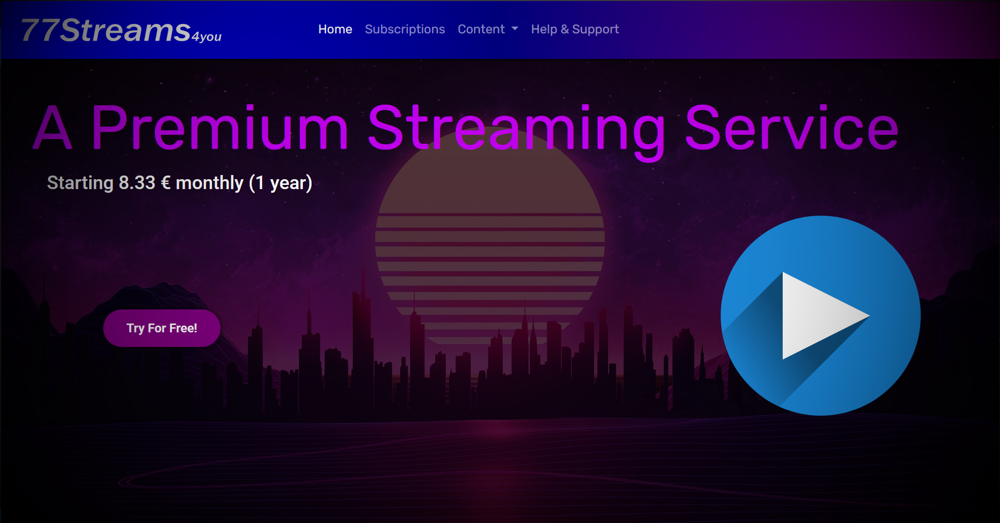
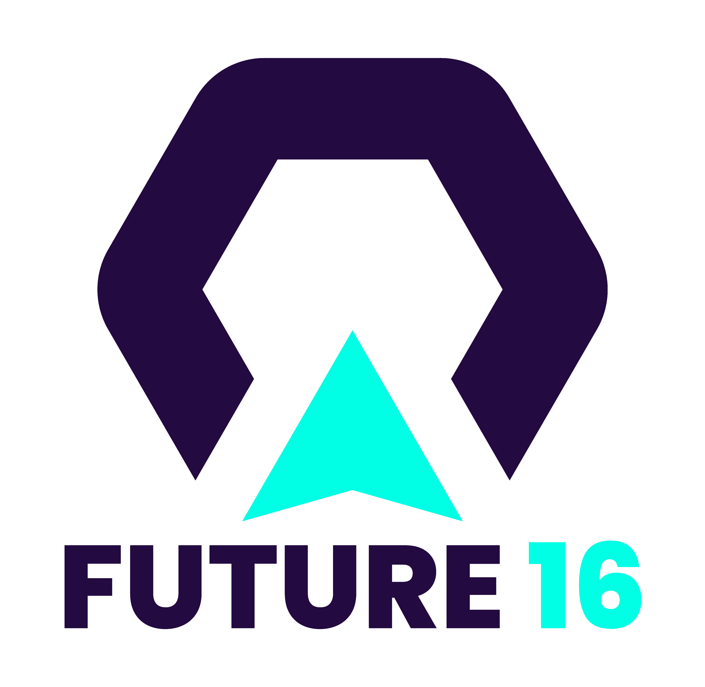
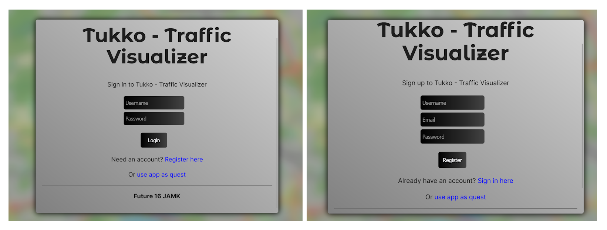
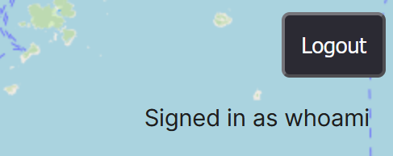

Näytteitä
- Verkkosivut ravintolalle
- Mobiilisovelluksia
- Fiktiivinen IPTV-sivu
- Full stack -peli
- Future Factory IT -projekti
Verkkosivut ravintolalle Johnny Hong Kong Hyvinkää
Työharjoittelu kesä 2024 - Tmi J.J.Wessman
Aihe: full stack -kehitys, pilvipalvelut, jatkuva integraatio (CI)
Työharjoittelun aikana työstin itsenäisesti verkkosivut ravintolalle Ravintola Johnny
Hong Kong Hyvinkää (linkki, huom 4.11.2024:
saattaa olla väliaikaisesti pois käytöstä johtuen pilvipalvelualustan vaihdosta), jonka työharjoitteluni ohjaaja omistaa osittain.
Implementoin sivustoon muun muassa seuraavat ominaisuudet:
Kun olin kehittämässä sivua, laitoin sen pyörimään AWS:n skaalautuvassa ECS-palvelussa,
jossa palvelin- ja käyttäjäpuolen Docker-kontit pyörivät https-protokollalla. Jatkuva
integraatio toimi AWS:n Codebuild-testien avulla. Myöhemmin kuitenkin sivu siirrettiin
taloudellisistä syistä toiseen pilvipalveluun.
- - käyttäjätodennus
- - käyttäjätietojen päivittäminen
- - tuotteet ruokamenuun (palvelimelta ladatut JSON-objektit)
- - admin-toiminto
- - yksinkertainen tilausjärjestelmä
- - lokalisaatio englanniksi sekä suomeksi
- - responsiivinen ulkoasu
Päällimmäiset käytetyt teknologiat: Node.js, Express, React, TypeScript, RestAPI,
PostgreSQL, Docker
Muut käytetyt sovelluskehykset: Sequelize ORM, TailwindCSS, Vite, Auth0, shadcn/ui,
Material UI
Palvelualustat: GitHub, Aiven, Amazon Web Services (Elastic Container Service,
Codebuild, Route 53)
Mobiilisovelluksia
Olen tehnyt pienimuotoisia mobiilisovelluksia hyödyntäen muun muassa React Nativea, Reactia sisältäen PWA (Progressive Web App), Firebasea ja Android Studiota.Fiktiivinen IPTV-sivu
LinkkiTämä on fiktionaalinen IPTV-verkkosivu, joka on vain frontend-kokonaisuus. Sivun tekemisessä käytetyt teknologiat ovat HTML, CSS, Sass, Bootstrap. Sivun tärkeimmät ominaisuudet ovat ulkoasu ja responsiivisuus.
"Meteorite Destroyers"


Future Factory IT 2024

Olin osa tiimiä "Future 16" Jamkin Future Factory IT 2024 -projektissa. Ketterän projektin
toimeksiantona oli parantaa erään toisen tiimin kehittämää
liikenteen visulisaattorisovellusta
implementoimalla siihen uusia ominaisuuksia ja parannuksia. Roolini oli DEV (kehitys) ja
opin projektin aikana käyttämään Reactia, TypeScriptiä ja Dockeria.
Sain implementoitua käyttäjätodennuksen tiimimme versioon sovelluksesta ja esitin
sen projektin demo-tapahtumassa. Yleisesti opin projektin aikana paljon käytänteitä
IT-projektityöskentelystä. Päivitin myös tiimimme etusivuja ja dokumentoin projektiamme.


Tiimin etusivut
Projektin dokumentaatio (kevät 2024)